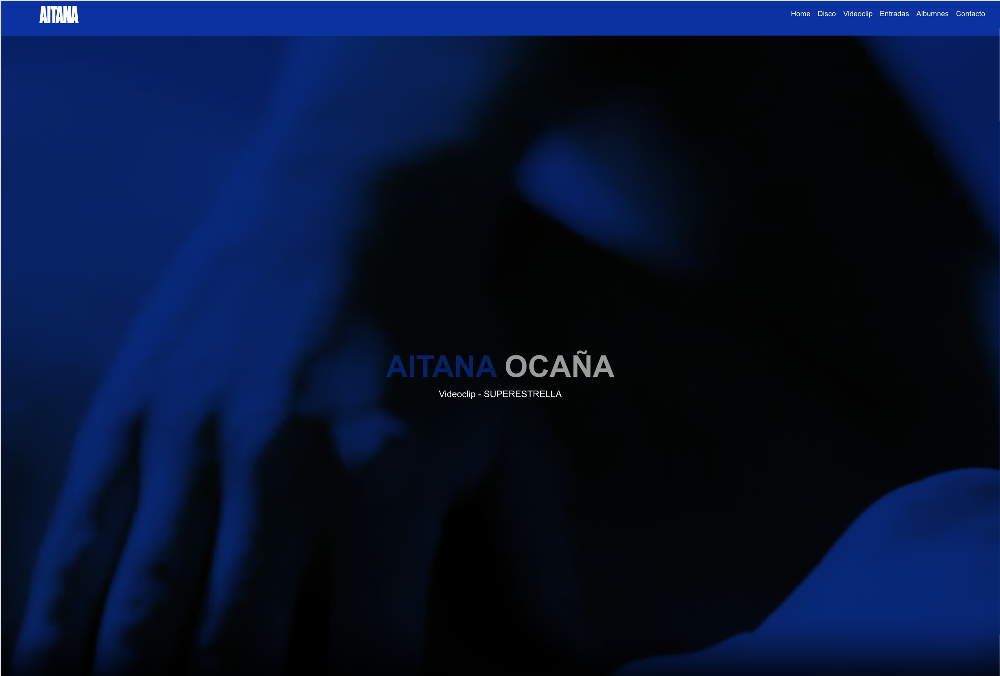
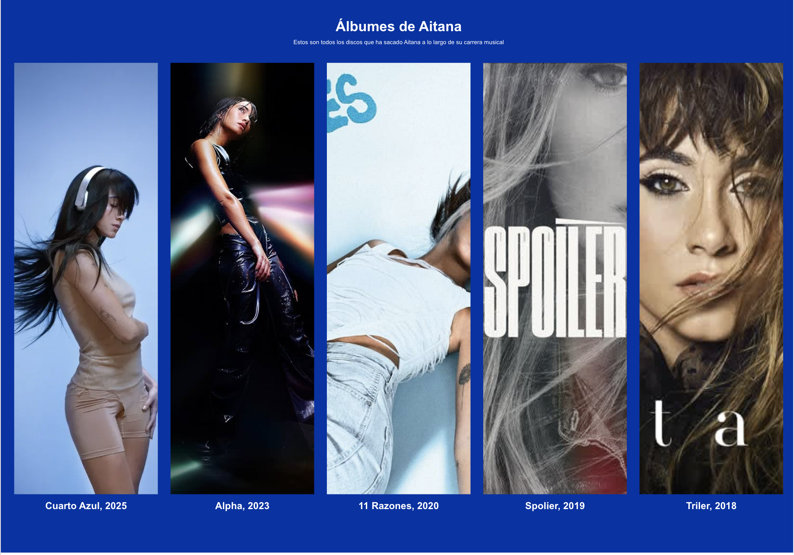

AITANA OCAÑA / Página web responsive
Este proyecto consistió en el diseño y desarrollo completo de una página web dedicada a la artista Aitana Ocaña. El objetivo fue crear una experiencia visual moderna, intuitiva y totalmente responsive, adaptando la interfaz a cualquier dispositivo y manteniendo una navegación fluida y accesible.


El desarrollo comenzó con la planificación de la arquitectura de la información y la organización de todos los contenidos. Se diseñó una interfaz limpia y visualmente atractiva, priorizando la experiencia de usuario mediante una navegación sencilla y una distribución clara de cada sección.
Posteriormente se implementó la maquetación utilizando HTML5 y CSS3, construyendo un diseño completamente responsive mediante Flexbox y Grid para garantizar una correcta visualización tanto en ordenador como en tablet y dispositivos móviles.
Una vez definida la estructura visual, se incorporaron diferentes funcionalidades mediante JavaScript, mejorando la interacción del usuario con la página. Entre ellas destacan animaciones al hacer scroll, efectos hover, menús adaptativos, transiciones suaves y una navegación optimizada entre las distintas secciones.
También se trabajó especialmente en la optimización del rendimiento, reduciendo tiempos de carga y adaptando imágenes y recursos multimedia para ofrecer una experiencia rápida y fluida.
El vídeo muestra el funcionamiento completo del sitio web y cómo la interfaz se adapta automáticamente a diferentes tamaños de pantalla. Cada elemento ha sido desarrollado siguiendo un enfoque responsive, reorganizando el contenido para mantener una correcta jerarquía visual y una navegación cómoda en cualquier dispositivo.
Durante el desarrollo también se prestó especial atención a aspectos como la accesibilidad, la optimización del código y la reutilización de componentes, consiguiendo una página escalable, fácil de mantener y preparada para futuras ampliaciones.
HTML5 · CSS3 · JavaScript · Responsive Design